UE3 Virologie — Introduction à la virologie : généralités & physiopathologie des infections virales
D'après le cours du Dr Héloïse Delagreverie (Microbiologie clinique — DFGSM3, 26 mai 2026). Pivots : point-clé / piège · diagnostic · protection / vaccin · repère. Figures du cours intégrées.
Partie 1 · Définition & structure
1 · Qu'est-ce qu'un virus ?
Un virus = entité biologique infectieuse : a une structure et des gènes, mais n'est PAS une cellule.
Parasitisme intracellulaire absolu : ne peut pas se reproduire seul → dépend du métabolisme d'une cellule hôte (mais ce n'est pas un parasite).
Un virus n'a donc : pas de métabolisme · pas de respiration · pas de modification du milieu extérieur · pas de reproduction autonome.
Très petit : invisible au microscope optique ; plus petit que les bactéries, un peu plus gros que les ribosomes. La forme n'a pas de conséquence sur le pouvoir pathogène.
Découverte (fin XIXe) : transmission d'une maladie de plante via un jus ultrafiltré (sans bactéries) → agent invisible, non cultivable, passant les filtres les plus fins → « fluides vivants contagieux » jusqu'à la 1re visualisation en 1939.
Capside = toujours protéique, très solide → protège le génome (⇒ les désinfectants antiviraux sont plus puissants que les antibactériens).
Protéines accessoires : matrice (rigidification), tégument (remplissage des gros virus), spicules/spikes (accrochage à la cellule cible).
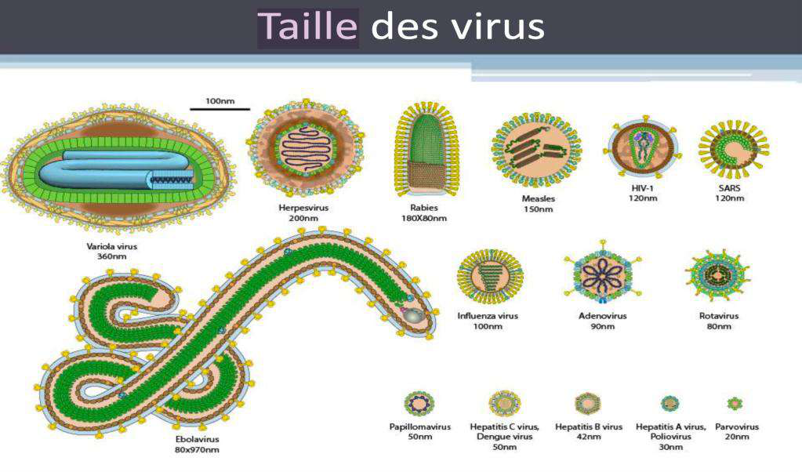
Taille & diversité de forme des virus — du plus gros (Variole ~360 nm, Ebola ~80×970 nm) aux plus petits (Parvovirus, Hépatite A/B, VIH ~120 nm, grippe ~100 nm). La forme et la taille n'influencent pas le pouvoir pathogène ; elles servent en revanche à la classification.
2 · Le génome viral
Le génome viral présente une très grande diversité — c'est l'un des 3 critères de classification.
Génome à ADN : bicaténaire (2 brins) · monocaténaire (1 brin, n'existe pas chez les eucaryotes) · partiellement bicaténaire circulaire (ex. hépatite B).
Génome à ARN (jamais chez les eucaryotes) : bicaténaire ou monocaténaire, linéaire ou segmenté.
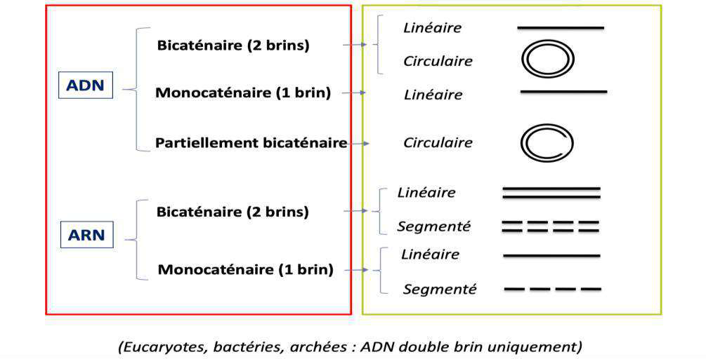
Diversité des génomes viraux — ADN : bicaténaire (linéaire/circulaire), monocaténaire (linéaire), partiellement bicaténaire circulaire. ARN : bi- ou monocaténaire, linéaire ou segmenté. Rappel : eucaryotes/bactéries/archées = ADN double brin uniquement.
Polarité & rétrovirus
ARN positif (+) = codant : une fois entré, le virus fabrique directement les protéines virales et se réplique.
ARN négatif (−) : a besoin d'une enzyme (RdRp, ARN polymérase ARN-dépendante apportée par le virus) pour fabriquer son complémentaire (+), lu ensuite par les ribosomes.
Rétrovirus (ex. VIH) : ARN « transformé » en ADN double brin par une reverse transcriptase.
📌 ADN vs ARN — où se déroule le cycle ? Les virus à ARN peuvent rester cytoplasmiques (ribosomes), car la cellule eucaryote n'a pas de RdRp → le virus apporte la sienne. Les virus à ADN vont dans le noyau chercher l'ARN polymérase cellulaire pour se transcrire. Un virus à ADN n'emporte jamais sa propre ARN polymérase.
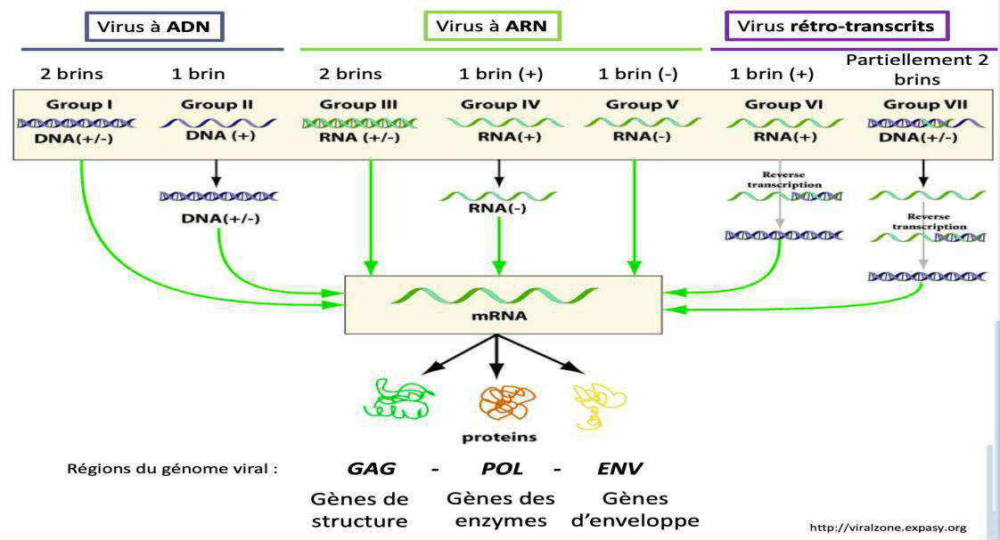
Stratégies de réplication (classification de Baltimore) — quel que soit le génome (ADN ±, ARN +, ARN −, rétro-transcrits…), tout converge vers l'ARN messager lu par les ribosomes pour fabriquer les protéines. Régions du génome : GAG (protéines de structure), POL (enzymes), ENV (enveloppe).
Variabilité génétique
Génome très variable, surtout les virus à ARN : leurs polymérases n'ont pas de système de relecture → mutations fréquentes.
Les mutations peuvent : tuer la cellule · ou donner un avantage (réplication plus rapide, échappement immunitaire par changement d'antigènes de surface, résistance aux médicaments par changement d'enzyme cible).
Quasi-espèce virale : chez un individu infecté, mélange de variants génétiquement différenciés, propre à chaque personne.
Capsides à symétrie complexe — cône du VIH (avec gp41/gp120, nucléocapside, reverse transcriptase, intégrase) et forme biconcave de la Variole/Mpox (clichés de microscopie électronique en haut).
4 · L'enveloppe
L'enveloppe = bicouche lipidique empruntée à la membrane de la cellule infectée lors de la sortie (bourgeonnement).
Elle porte des glycoprotéines : du « soi » (humaines) + celles du virus (gènes env) qui servent de récepteurs d'accrochage.
Spicule viral = glycoprotéine à domaines externe / transmembranaire / interne (1-2 par virus). Ex. grippe : hémagglutinine + neuraminidase.
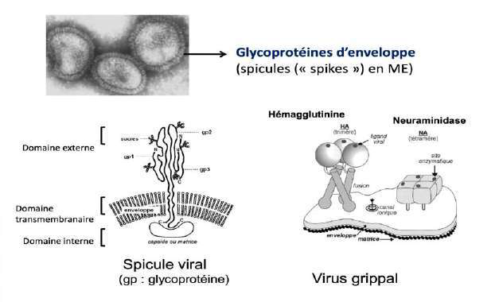
Glycoprotéines d'enveloppe (spicules / « spikes ») — le spicule viral a un domaine externe (accrochage), transmembranaire et interne (ancré dans la capside/matrice). Ex. virus grippal : hémagglutinine (ligand viral, fixation) et neuraminidase (enzymatique). Photo en ME = glycoprotéines de surface (Herpès).
📌 Avantage de l'enveloppe : portant des glycoprotéines du « soi », le virus est camouflé vis-à-vis du système immunitaire. Inconvénient : grande fragilité (cf. ci-dessous).
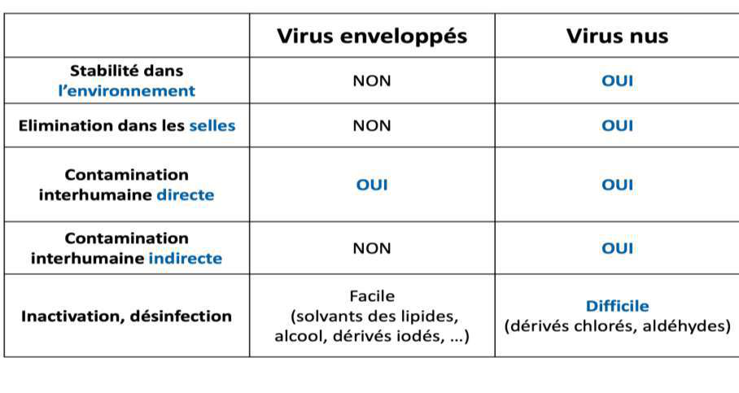
Virus enveloppés vs virus nus — le tableau-clé — les enveloppés sont fragiles (instables dans l'environnement, détruits dans le tube digestif, le savon, les solvants des lipides/alcool) → transmission directe. Les nus sont résistants (stables, éliminés dans les selles, contamination directe ET indirecte) → désinfection difficile (dérivés chlorés, aldéhydes).
Partie 2 · Classification
5 · Classification des virus
📌 À connaître par cœur — la classification repose sur 3 critères : ① le type de génome · ② la forme de la capside (symétrie) · ③ la présence ou non d'enveloppe.
Porte d'entrée = lieu d'entrée dans le corps (blessure, piqûre de moustique, muqueuse respiratoire/digestive/génitale…) → pénétration.
Diffusion = déplacement vers l'organe cible (ex. VHB : transmission sexuelle puis migration vers le foie). Plus l'organe est loin, plus l'incubation est longue.
Diffusion via le sang (capillaires) et/ou la lymphe (portage par les macrophages/cellules phagocytaires).
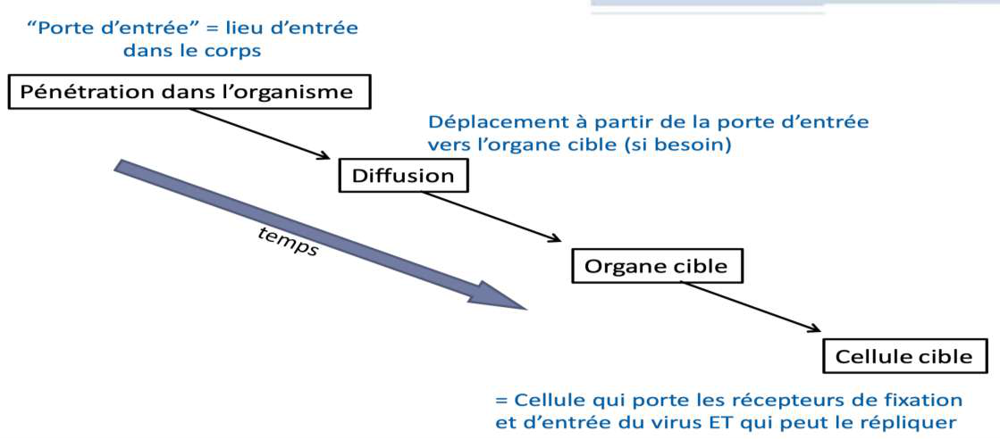
De la porte d'entrée à la cellule cible — pénétration → diffusion (avec le temps) → organe cible → cellule cible (= cellule portant les récepteurs d'entrée ET capable de répliquer le virus).
📌 Définitions à distinguer :
Virémie = présence de virus dans le sang → détectable par PCR. Une fois le virus dans l'organe cible, la virémie peut disparaître → diagnostic indirect par sérologie (anticorps).
Cellule sensible = possède les récepteurs d'entrée. Cellule permissive = permet la réplication (virions complets infectieux).
Spectre d'hôte : VIH = strictement humain (ne reconnaît que le CD4 humain) ; Ebola = récepteurs quasi universels (humains, primates, chauves-souris…).
Infection localisée
Infection systémique (généralisée)
N'infecte qu'un tissu / la porte d'entrée → pas de virémie (ex. grippe : cellules ciliées respiratoires). Incubation courte (quelques jours).
Infecte des organes à distance de la porte d'entrée. Incubation longue (jours → mois ; ex. VHB jusqu'à 3 mois).
Les symptômes systémiques (fièvre) d'une infection localisée sont dus à l'activation du système immunitaire, pas à une dissémination du virus.
Piège moustique : on n'attrape pas le VIH par piqûre (digéré par le moustique), contrairement aux arbovirus (dengue, fièvre jaune) non digérés.
7 · Cycle de multiplication
📌 Pas de mitose, pas de division autonome : le virus dépend strictement d'une cellule à infecter. Réplication virale = réplication du génome ET production protéique.
1
Fixation / attachement aux récepteurs membranaires (le ligand viral — capside ± spicules, ou glycoprotéines d'enveloppe — détermine le spectre d'hôte).
2
Entrée : par fusion des membranes (virus enveloppés) · par transfert du génome à travers la membrane (certains virus nus) · par endocytose (invagination → vésicule → fusion → libération de la capside).
3
Décapsidation : libération du génome dans la cellule.
4
Réplication du génome : ADN→ADN (ADN pol.) · ARN→ARN (RdRp virale) · ARN→ADN→ARN (transcriptase inverse des rétrovirus). Détournement du métabolisme cellulaire (parasitisme).
5
Assemblage : auto-assemblage des capsides (cytoplasme ++ ou noyau pour les virus à ADN : Herpes-, Adeno-, Parvoviridae) ; maturation par protéases (clivage).
Le cycle de multiplication en 6 étapes — ① fixation → ② entrée → ③ décapsidation → ④ réplication et expression du génome → ⑤ assemblage → ⑥ libération (± mort de la cellule hôte). Tout le cycle dépend d'une cellule vivante à infecter.
Effet cytopathogène : autrefois, le virus était identifié par la forme des lésions sur tapis cellulaire (résultats en ~2 semaines, expertise nécessaire) ; aujourd'hui remplacé par la PCR (résultat le lendemain).
Partie 4 · L'infection virale
8 · Types d'infections virales
Type
Mécanisme & exemples
Lytique (la plus simple)
La cellule fabrique des virus qui la font exploser → effet cytopathogène.
Chronique productive
Évolution lente, le virus s'équilibre avec l'hôte sans le tuer, production à bas bruit, peu/pas de symptômes (ex. VHC, VHB).
Chronique latente
Virus (souvent à ADN) endormi dans le noyau (protégé du SI), se réactive par intermittence (ex. Herpèsvirus). Problème majeur chez l'immunodéprimé.
Chronique transformante (la plus grave)
Oncogène, pas de guérison : dérèglement cellulaire → cancer (HPV, VHB, EBV, HTLV, HHV8).
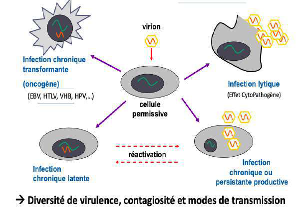
Devenirs d'une cellule permissive infectée — à partir du virion : infection lytique (effet cytopathogène) · chronique persistante productive · chronique latente (avec réactivation) · chronique transformante (oncogène). Diversité de virulence, contagiosité et modes de transmission.
Aiguë vs persistante
Infection aiguë : durée brève, forte réplication (contagiosité maximale, incubation courte, épidémies). Pas toujours bénigne (Ebola, SRAS). Ex. GEA virales, virus respiratoires, ROR.
Infection persistante : pas d'élimination du virus → chronique (active : VHB, VHC, VIH) ou latente (inactive : Herpèsvirus).
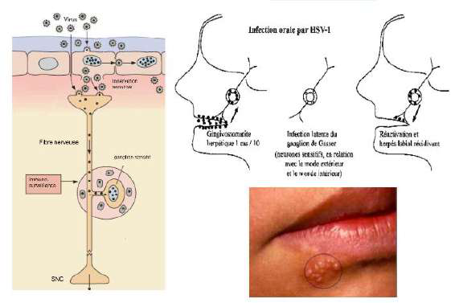
Exemple de latence — HSV-1 — primo-infection par la muqueuse orale (qui n'est pas sa cellule cible) → le virus est capté par un neurone sensitif et remonte jusqu'au ganglion de Gasser où il s'endort (latence à vie) → réactivation par le même neurone → herpès labial récidivant. (HSV-1 plutôt oral, HSV-2 plutôt génital — même voie d'entrée : épithélium muqueux relié à des neurones sensitifs.)
9 · Immunité antivirale & diagnostic
Les 3 lignes de défense
① Barrières naturelles (peau, mucus, cils, microbiote) → ② immunité innée (macrophages, cellules dendritiques) → ③ immunité adaptative (Ac spécifiques, retardée de plusieurs jours, qui mature avec le temps de l'infection).
L'immunité adaptative est éduquée par la vaccination → mémoire antivirale (réponse rapide, spécifique, protectrice dès l'entrée du virus).
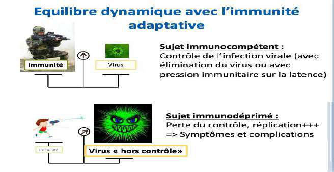
Équilibre dynamique avec l'immunité adaptative — sujet immunocompétent : contrôle de l'infection (élimination ou pression sur la latence). Sujet immunodéprimé : équilibre rompu → réplication+++, virus « hors contrôle » → symptômes, atteintes d'organes, évolution accélérée vers le cancer (immunodépression surtout acquise : SIDA, médicaments, âge).
Diagnostic d'une maladie virale
Diagnostic direct
Diagnostic indirect
Recherche du virus dans le prélèvement (boutons, LCR, sang…). Autrefois culture/effet cytopathogène (lent, coûteux) → aujourd'hui PCR (très sensible, résultat en 1-2 j).
Sérologie (ELISA) = recherche d'anticorps. IgM = infection récente (4-7 j, disparaissent en quelques semaines) ; IgG = plus tardives/anciennes. Les Ac peuvent aussi témoigner d'une vaccination.
📌 Cas particulier du VIH : c'est le seul virus pour lequel on recherche aussi l'antigène (Ag p24) en routine ; sinon la technique la plus rapide pour la recherche directe est la PCR. Le diagnostic du VIH repose sur la sérologie (Ac anti-VIH présents = patient infecté, car infection chronique).
10 · QCM iconographique — reconnaître l'atteinte
📌 La prof conclut : nous sommes des « sacs à virus » — nous sommes tous porteurs (EBV, VZV, HHV6/7, Adénovirus, HSV-1, CMV, BK, JC) et vivons en équilibre grâce à notre système immunitaire.
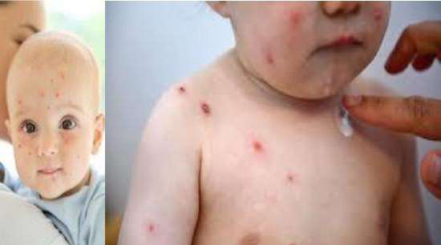
① Varicelle (VZV) — primo-infection : vésicules sur tout le corps, d'âges différents (certaines en train d'éclore, d'autres croûteuses).
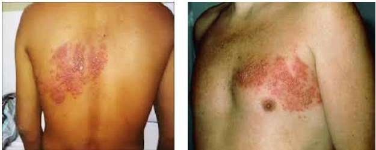
② Zona (VZV) — réactivation du virus latent (âge, immunodépression) dans quelques neurones → vésicules dans le territoire d'un nerf, plus douloureuses que prurigineuses.
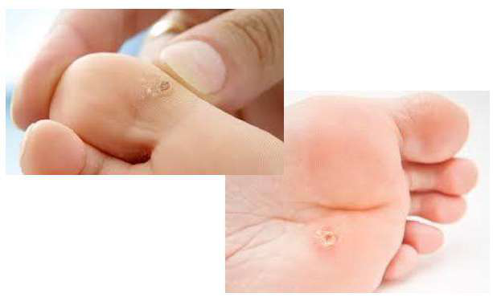
③ Verrue (HPV cutané) — papillomavirus cutané.
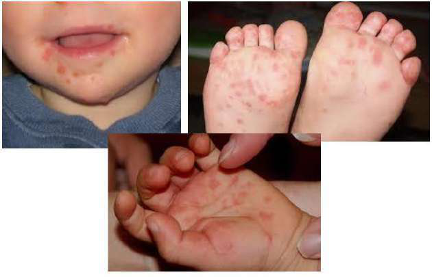
④ Pied-main-bouche (entérovirus) — les entérovirus donnent « tout sauf des gastro-entérites » : méningites, atteintes cutanées, paralysies.